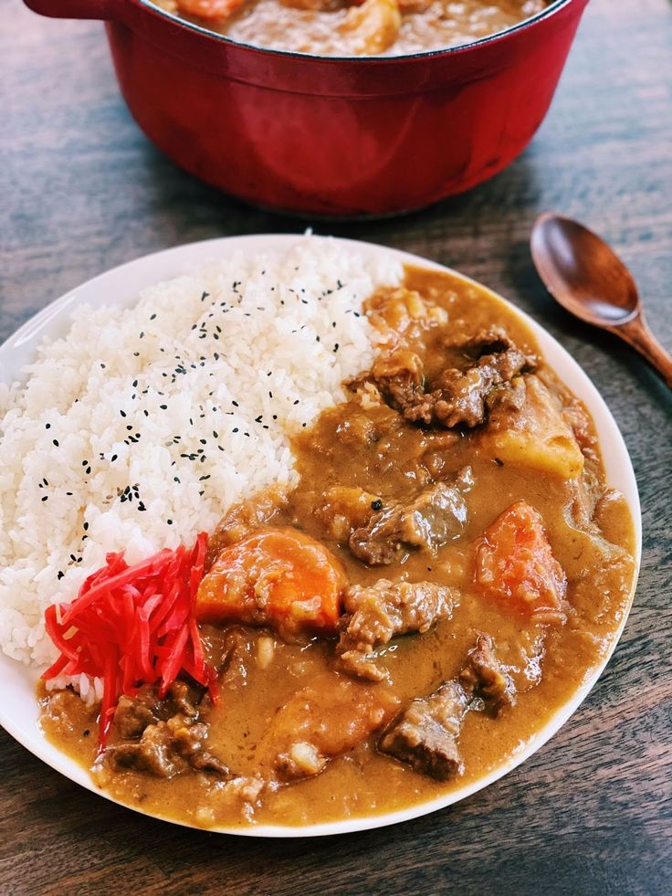

Japanese Beef Curry
Home Button

The British Royal Navy first introduce Indian-style curry to Japan some 150 years ago during the Meiji Restoration (1868–1912). Over time, the Japanese adapted the dish to make it milder and sweeter with a thick, rich gravy that’s ideal to serve with Japanese steamed rice. By the early 20th century, this Japanese curry rice (kare raisu, カレーライス) had become a mainstream staple; it’s now widely enjoyed in family restaurants, food halls, s
chool cafeterias, and Japanese households throughout the country.
Ingredients
- Beef chuck roast
- Onions
- Potatoes
- Carrots
- Mushrooms
- Garlic and ginger
- Red Wine
- Curry roux
Steps
- Thinly slice and sauté the onions. Cook them in a large, heavy-bottomed pot with some butter and oil.
When the onions are caramelized, set them aside.
- Prep the vegetables. Cut the mushrooms, carrots, and potato, and soak the potato chunks in water to remove the starch. Grate the ginger and mince the garlic.
- Cut the meat and season it. Cut the beef chuck roast into large cubes. Sprinkle with salt and pepper and lightly coat the meat on all sides with flour.
- Sear the beef and deglaze the pan. Add the beef cubes in two batches to a pan preheated over medium-high heat. Sear on all sides until brown and crusty and remove to a plate. Deglaze the pan with the red wine, scraping up the delicious browned bits with a wooden spatula.
- Add the seasonings to the caramelized onions. Add the garlic, ginger, curry powder, and tomato paste to the caramelized onions. Stir and sauté for a minute.
- Add the meat and pan liquid. Add the seared beef with juices and the deglazed pan liquid to the onions in the pot. Mix together and cook to allow the alcohol from the wine to evaporate further.
- Simmer low and slow, then add the potatoes and curry roux. Add the carrots, mushrooms, beef stock, apple, Worcestershire sauce, and milk. Simmer until the beef is tender, then add the potatoes to cook through. Dissolve the curry roux into the stew off the heat, then cook on the lowest heat until the sauce thickens.
- Serve. Portion a serving of Japanese steamed rice on one half of an individual plate or pasta bowl and spoon the Japanese beef curry on the other half. Garnish with Japanese pickles and enjoy!
Source website